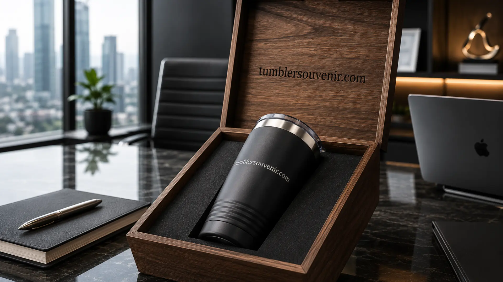

Tumbler Souvenir sebagai Strategi Branding Perusahaan Modern
Ringkasan
Tumbler souvenir berperan sebagai strategi branding perusahaan modern karena penggunaannya yang berulang setiap hari membuat logo brand terus terekspos secara alami kepada penerima maupun lingkungan sekitarnya. Strategi ini dianggap lebih efektif dibanding media promosi konvensional karena tidak terasa seperti iklan, melainkan sebagai gift yang benar-benar bermanfaat.
- Tumbler souvenir meningkatkan brand recall melalui penggunaan harian yang berulang.
- Gift fungsional dinilai lebih efektif dibanding merchandise dekoratif untuk membangun persepsi brand.
- Konsistensi desain dan kualitas material memengaruhi kekuatan pesan branding.
- Tumbler souvenir dapat digunakan untuk berbagai segmen, mulai dari karyawan hingga klien eksternal.
Daftar Isi
Mengapa Gift Fungsional Lebih Efektif untuk Branding?
Gift fungsional lebih efektif untuk branding karena digunakan secara aktif dalam kehidupan sehari-hari penerima, sehingga logo brand memiliki peluang lebih besar untuk dilihat berulang kali dalam berbagai situasi, baik di kantor, di rumah, maupun di ruang publik. Semakin sering logo terlihat, semakin kuat pula asosiasi brand tersebut tertanam dalam ingatan.
Berbeda dengan merchandise yang bersifat dekoratif dan cenderung hanya dipajang sesekali, gift fungsional seperti tumbler menciptakan interaksi langsung antara penerima dengan brand setiap kali digunakan. Interaksi berulang inilah yang secara umum diyakini industri promotional product sebagai faktor utama tingginya efektivitas item fungsional dibanding item dekoratif.
Selain itu, gift fungsional juga cenderung dianggap lebih thoughtful oleh penerima, karena menunjukkan bahwa perusahaan memperhatikan kebutuhan praktis, bukan sekadar memberi hadiah formalitas semata.
Bagaimana Tumbler Souvenir Membangun Brand Recall?
Tumbler souvenir membangun brand recall melalui kombinasi visibilitas logo yang konsisten dan konteks penggunaan yang positif, seperti saat rapat, commuting, atau aktivitas sehari-hari di kantor. Setiap kali tumbler digunakan, logo perusahaan turut hadir dalam momen yang bersifat personal dan tidak dipaksakan.

Konsistensi visual juga menjadi kunci penting. Warna, bentuk, dan penempatan logo yang seragam di seluruh unit tumbler membantu memperkuat identitas brand secara keseluruhan, dibanding desain yang berubah-ubah di setiap batch produksi.
Selain aspek visual, kualitas material tumbler turut memengaruhi persepsi brand. Tumbler yang cepat rusak atau mudah tergores dapat menimbulkan asosiasi negatif, sementara tumbler berkualitas tinggi justru memperkuat citra perusahaan sebagai entitas yang memperhatikan detail dan kualitas.
Segmen Penerima Mana Saja yang Efektif Menggunakan Strategi Ini?
Strategi branding melalui tumbler souvenir efektif diterapkan pada berbagai segmen penerima, mulai dari karyawan internal sebagai bentuk apresiasi, klien sebagai token relasi bisnis, hingga peserta event eksternal sebagai media pengenalan brand kepada audiens baru.
Untuk karyawan internal, tumbler souvenir sering digunakan sebagai bagian dari employee appreciation program atau gift ulang tahun perusahaan, yang secara tidak langsung turut memperkuat rasa memiliki terhadap brand tempat mereka bekerja.
Untuk klien dan mitra bisnis, tumbler souvenir berfungsi sebagai pengingat halus mengenai hubungan kerja sama yang sedang berjalan, tanpa terkesan sebagai promosi yang agresif.
Sementara untuk peserta event eksternal seperti seminar atau pameran, tumbler souvenir menjadi media efektif untuk memperkenalkan brand kepada audiens yang mungkin belum familiar sebelumnya, sekaligus meninggalkan kesan pertama yang positif.
Mengapa Konsistensi Jangka Panjang Penting dalam Strategi Ini?
Konsistensi jangka panjang penting dalam strategi branding melalui tumbler souvenir karena efek brand recall tidak terbentuk dari satu kali pemberian saja, melainkan dari akumulasi eksposur logo yang terjadi secara berulang dalam jangka waktu tertentu. Perusahaan yang menjadikan tumbler souvenir sebagai bagian dari program tahunan, alih-alih pemberian sesekali, umumnya melihat hasil yang lebih terasa terhadap kekuatan brand di mata karyawan maupun klien.
Konsistensi ini juga mencakup keseragaman kualitas dari batch produksi satu ke batch berikutnya. Perbedaan kualitas material atau hasil cetak antar periode pemesanan dapat menimbulkan kesan kurang profesional, terutama jika penerima membandingkan souvenir yang diterima pada waktu berbeda.
Selain itu, dokumentasi dan evaluasi sederhana terhadap respons penerima souvenir dari waktu ke waktu dapat membantu perusahaan menyempurnakan strategi branding melalui merchandise di periode berikutnya, sehingga anggaran yang dikeluarkan memberikan dampak yang lebih terukur.
Bagaimana Cara Memaksimalkan Nilai Branding dari Tumbler Souvenir?
Nilai branding dari tumbler souvenir dapat dimaksimalkan dengan memastikan desain logo proporsional, memilih material yang mencerminkan kualitas brand, serta menyesuaikan momen pemberian dengan konteks yang relevan bagi penerima. Ketiga faktor ini saling memengaruhi kekuatan pesan yang ingin disampaikan.
Desain logo yang terlalu kecil atau tidak proporsional dapat mengurangi keterlihatan brand, sementara desain yang terlalu dominan justru bisa terasa berlebihan. Keseimbangan antara elemen brand dan estetika produk menjadi kunci penting yang perlu diperhatikan sejak tahap perencanaan desain.
Perusahaan yang ingin memastikan hasil akhir sesuai dengan standar branding yang diinginkan dapat berkonsultasi mengenai detail desain dan spesifikasi material melalui tumblersouvenir.com sebelum memasuki tahap produksi massal.
Tumbler souvenir bukan sekadar gift pelengkap acara, melainkan media branding yang bekerja secara berkelanjutan melalui penggunaan harian penerimanya. Perusahaan yang ingin menjadikan tumbler souvenir sebagai bagian dari strategi branding jangka panjang dapat mulai berkonsultasi dan memesan custom melalui tumblersouvenir.com.